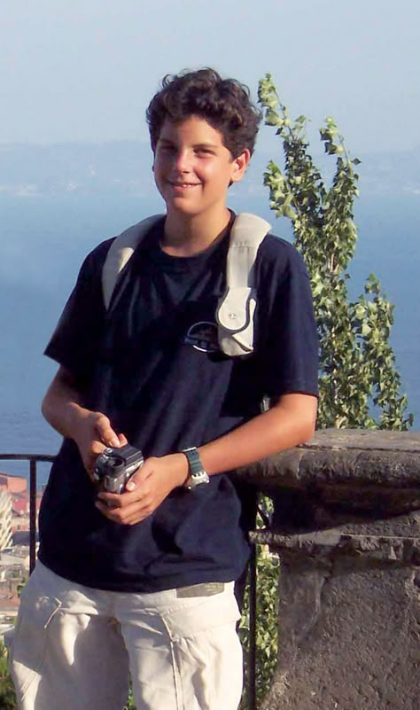
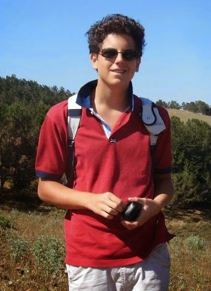

Biografia e Vida
A história de Carlo Acutis e sua influência na fé.
Descubra a vida e as contribuições de Carlo Acutis, um jovem que inspirou muitos com sua devoção e paixão pela fé.
Biografia e Vida

Carlo Acutis nasceu em Londres, em 3 de maio de 1991, filho de pais italianos que viviam na capital inglesa por motivos de trabalho. Foi batizado duas semanas após o nascimento. Ainda no outono daquele ano, a família retornou para a Itália, estabelecendo-se em Milão, onde Carlo cresceu.
A descoberta da fé
Apesar de sua família não ser particularmente praticante, Carlo demonstrou desde cedo uma profunda devoção religiosa. Aos 7 anos, recebeu sua Primeira Comunhão e, desde então, passou a frequentar a Missa diariamente. Foi nessa época que ele disse à sua mãe sua famosa frase: "Estar sempre perto de Jesus: esse é o meu projeto de vida".
Um Adolescente Como Qualquer Outro



Carlo era um adolescente alegre, extrovertido e de bom coração. Amava videogames especialmente os jogos do Nintendo, como Super Mario, computadores, animais e esportes. Mas ele não escondia sua fé. Sempre estava disposto a ajudar colegas necessitados e era amigo dos pobres de sua vizinhança, dando-lhes parte de sua mesada quando pediam ajuda.
A Doença e a Morte
Em outubro de 2006, Carlo foi diagnosticado com uma forma agressiva de leucemia. Em poucos dias, sua saúde piorou drasticamente. Diante do sofrimento, ele ofereceu sua dor ao Senhor, dizendo: "Ofereço todo o meu sofrimento ao Senhor, pelo Papa e pela Igreja, para não ir ao purgatório, mas ir direto ao céu". Faleceu em 12 de outubro de 2006, aos 15 anos e 5 meses, no Hospital San Gerardo, em Monza. Seu corpo foi sepultado em Assis, como ele desejava, para ficar perto de São Francisco.